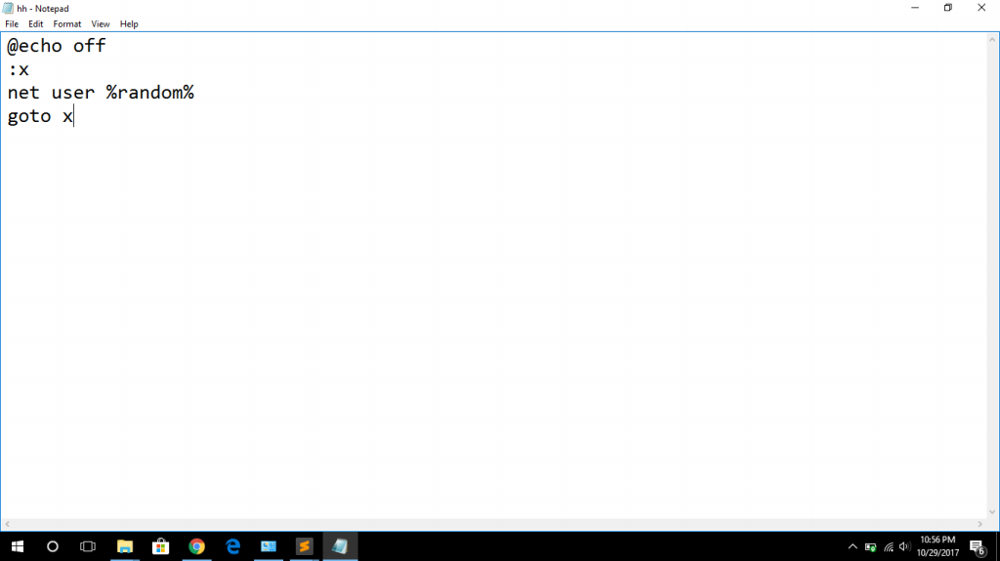
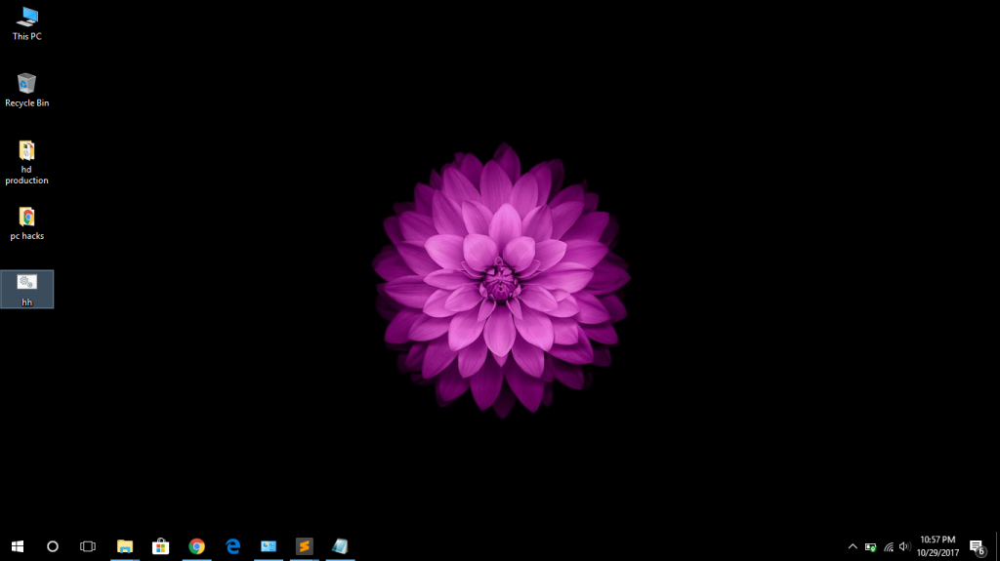
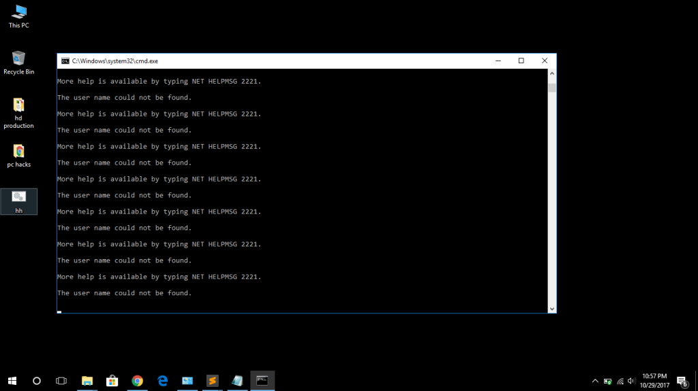

Genarate infinty user accounts using notepad
Hi guys, Today i am going to show you how to genarate infinty user accounts using note pad .
Ok lets start.. now open the note pad you can open the note pad by clicking start button and type "notepad" in the search box or press " windows key + R " in your kyboard then you will see run dialog box and type "notepad " in it and hit enter button.
Ok now you can see note pad.then type bellow code in the notepad
@echo off
:x
net user %random%
goto x
Ok now goto file save as and give any file name and give .bat or .com as the file extension and this is very important.*** give the file type as all files
Process - This code runs like a loop by [:x & got x ] code segments.
[net user] is the command what use to make a new user account in DOS .
[%random%] by this part it means infity (like unstoppable :) )
so this programme makes a large types of empty folders in location where our above .bat file locate.
Images for follw about steps


* if you have any problem contact our admins by goto contact page or send us your problem by goto post a problem link..
We can develop this code by ading many dos commands we see those in next lessons .
Thank you for reading this tutorial and share this site among your friends.